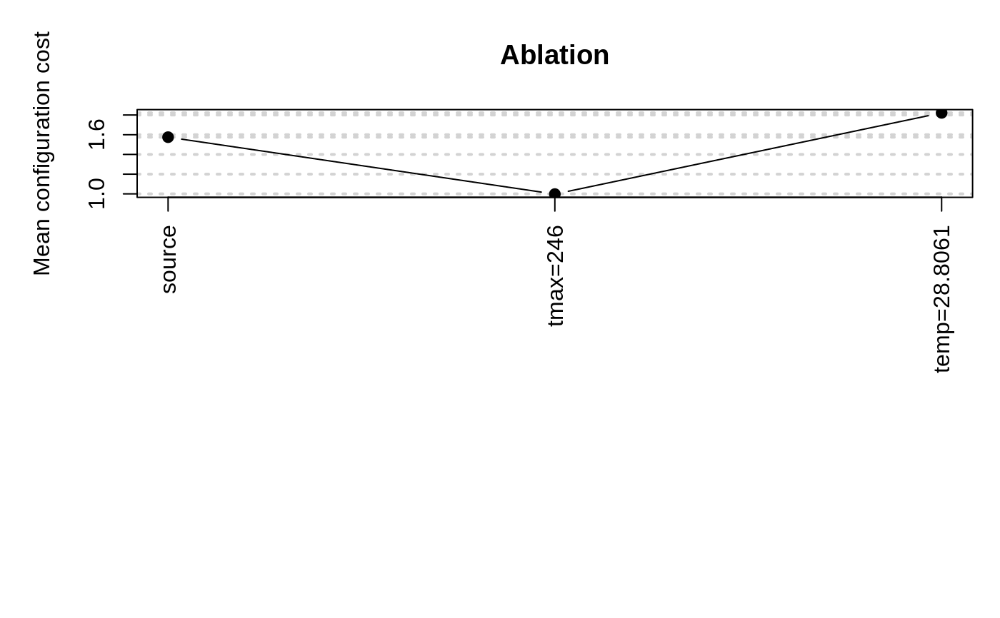
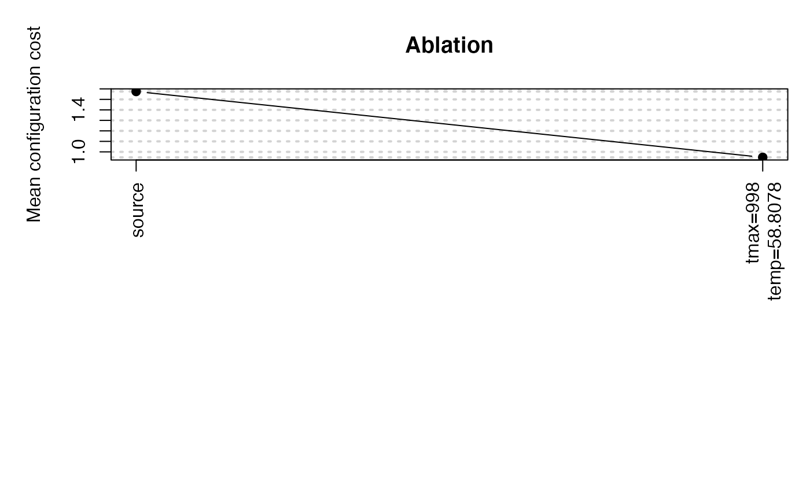

Ablation is a method for analyzing the differences between two configurations.
ablation( iraceLogFile = NULL, iraceResults = NULL, src = NULL, target = NULL, ab.params = NULL, n.instances = NULL, type = "full", seed = 1234567, ablationLogFile = "log-ablation.Rdata", pdf.file = NULL, pdf.width = 20, mar = c(12, 5, 4, 1), debugLevel = NULL )
| iraceLogFile | Log file created by irace, this file must contain
the |
|---|---|
| iraceResults | Object created by irace and saved in
|
| src, target | Source and target configuration IDs. If |
| ab.params | Parameter names to be used for the ablation. They must be in parameters$names. |
| n.instances | Number of instances to be used for the "full" ablation, if not provided firstTest instances are used. |
| type | Type of ablation to perform, "full" will execute all instances in the configurations to determine the best performing, "racing" will apply racing to find the best configurations. |
| seed | Numerical value to use as seed for the random number generation. |
| ablationLogFile | Log file to save the ablation log. |
| pdf.file | Prefix that will be used to save the plot file of the ablation results. |
| pdf.width | Width provided to create the pdf file. |
| mar | Vector with the margins for the ablation plot. |
| debugLevel | ( |
A list containing the following elements:
Configurations tested in the ablation.
A matrix with the instances used in the experiments. First column has the
instances IDs from iraceResults$scenario$instances, second column the seed assigned to the instance.
A matrix with the results of the experiments (columns are configurations, rows are instances).
Scenario object with the settings used for the experiments.
IDs of the best configurations at each step of the ablation.
Best configuration found in the experiments.
C. Fawcett and H. H. Hoos. Analysing differences between algorithm configurations through ablation. Journal of Heuristics, 22(4):431–458, 2016.
Leslie Pérez Cáceres and Manuel López-Ibáñez
# \donttest{ irace.logfile <- file.path(system.file(package="irace"), "exdata", "sann.rda") load(irace.logfile) # Execute ablation between the first and the best configuration found by irace. ablation(iraceResults = iraceResults, ablationLogFile = NULL)#> # 2021-10-20 08:42:14 UTC: Starting ablation from 1 to 134 : #> # Seed:1234567 #> # Configurations (row number is ID): #> tmax temp #> 1 2241 62.7879 #> 134 246 28.8061 #> # 2021-10-20 08:42:14 UTC: Executing source and target configurations on the given instances... #> # Generating configurations (row number is ID): tmax temp #> tmax temp #> 2 246 62.7879 #> 3 2241 28.8061 #> # 2021-10-20 08:42:21 UTC: Ablation (full) of 2 configurations on 100 instances. #> # Markers: #> x No test is performed. #> c Configurations are discarded only due to capping. #> - The test is performed and some configurations are discarded. #> = The test is performed but no configuration is discarded. #> ! The test is performed and configurations could be discarded but elite configurations are preserved. #> . All alive configurations are elite and nothing is discarded #> #> +-+-----------+-----------+-----------+----------------+-----------+--------+-----+----+------+ #> | | Instance| Alive| Best| Mean best| Exp so far| W time| rho|KenW| Qvar| #> +-+-----------+-----------+-----------+----------------+-----------+--------+-----+----+------+ #> |x| 1| 2| 3| 0.1359190969| 2|00:00:00| NA| NA| NA| #> |x| 2| 2| 2| 0.4960449827| 4|00:00:00|-1.00|0.00|1.0000| #> |x| 3| 2| 2| 0.3520459583| 6|00:00:00|-0.33|0.11|0.6667| #> |x| 4| 2| 2| 0.3115514821| 8|00:00:00|-0.33|0.00|0.6667| #> |x| 5| 2| 3| 1.468194526| 10|00:00:00|-0.20|0.04|0.6000| #> |x| 6| 2| 3| 1.229988081| 12|00:00:00|-0.07|0.11|0.5333| #> |x| 7| 2| 3| 1.061992361| 14|00:00:00|+0.05|0.18|0.4762| #> |x| 8| 2| 3| 0.9329258426| 16|00:00:00|+0.14|0.25|0.4286| #> |x| 9| 2| 3| 1.269014705| 18|00:00:00|+0.00|0.11|0.5000| #> |x| 10| 2| 3| 1.448941003| 20|00:00:00|-0.07|0.04|0.5333| #> |x| 11| 2| 3| 1.329333376| 22|00:00:00|-0.02|0.07|0.5091| #> |x| 12| 2| 3| 1.559966470| 24|00:00:00|-0.06|0.03|0.5303| #> |x| 13| 2| 3| 1.445657360| 26|00:00:00|-0.03|0.05|0.5128| #> |x| 14| 2| 3| 1.355063335| 28|00:00:00|-0.05|0.02|0.5275| #> |x| 15| 2| 3| 1.293879928| 30|00:00:00|-0.07|0.00|0.5333| #> |x| 16| 2| 3| 1.218176519| 32|00:00:00|-0.05|0.02|0.5250| #> |x| 17| 2| 3| 1.321263211| 34|00:00:00|-0.06|0.00|0.5294| #> |x| 18| 2| 2| 0.7977867197| 36|00:00:00|-0.06|0.00|0.5294| #> |x| 19| 2| 2| 0.7653880925| 38|00:00:00|-0.05|0.00|0.5263| #> |x| 20| 2| 2| 1.162314460| 40|00:00:00|-0.05|0.00|0.5263| #> |x| 21| 2| 2| 1.228237480| 42|00:00:00|-0.05|0.00|0.5238| #> |x| 22| 2| 2| 1.184501548| 44|00:00:00|-0.04|0.01|0.5195| #> |x| 23| 2| 2| 1.141060879| 46|00:00:00|-0.03|0.02|0.5138| #> |x| 24| 2| 2| 1.106723037| 48|00:00:00|-0.01|0.03|0.5072| #> |x| 25| 2| 2| 1.065971969| 50|00:00:00|-0.03|0.01|0.5133| #> |x| 26| 2| 2| 1.029269874| 52|00:00:00|-0.02|0.02|0.5077| #> |x| 27| 2| 2| 1.014996255| 54|00:00:00|-0.03|0.01|0.5128| #> |x| 28| 2| 2| 0.9943026557| 56|00:00:00|-0.02|0.02|0.5079| #> |x| 29| 2| 2| 1.011138629| 58|00:00:00|-0.02|0.01|0.5123| #> |x| 30| 2| 2| 1.077700332| 60|00:00:00|-0.03|0.00|0.5149| #> |x| 31| 2| 2| 1.054824948| 62|00:00:00|-0.02|0.01|0.5118| #> |x| 32| 2| 2| 1.031912563| 64|00:00:00|-0.02|0.02|0.5081| #> |x| 33| 2| 2| 1.096263050| 66|00:00:00|-0.02|0.01|0.5114| #> |x| 34| 2| 2| 1.075666599| 68|00:00:00|-0.03|0.00|0.5134| #> |x| 35| 2| 2| 1.051204928| 70|00:00:00|-0.03|0.00|0.5143| #> |x| 36| 2| 2| 1.026650668| 72|00:00:00|-0.03|0.00|0.5127| #> |x| 37| 2| 2| 1.000804805| 74|00:00:00|-0.02|0.01|0.5105| #> |x| 38| 2| 2| 0.9753403487| 76|00:00:00|-0.02|0.01|0.5078| #> |x| 39| 2| 2| 0.9648674801| 78|00:00:00|-0.01|0.02|0.5047| #> |x| 40| 2| 2| 0.9512978793| 80|00:00:00|-0.00|0.02|0.5013| #> |x| 41| 2| 2| 0.9316323061| 82|00:00:00|+0.00|0.03|0.4976| #> |x| 42| 2| 2| 0.9103713207| 84|00:00:00|+0.01|0.04|0.4936| #> |x| 43| 2| 2| 0.8951681450| 86|00:00:00|+0.02|0.04|0.4895| #> |x| 44| 2| 2| 0.8765558499| 88|00:00:00|+0.03|0.05|0.4852| #> |x| 45| 2| 2| 0.8615018967| 90|00:00:00|+0.02|0.04|0.4909| #> |x| 46| 2| 2| 0.8517754943| 92|00:00:00|+0.03|0.05|0.4870| #> |x| 47| 2| 2| 0.8402645095| 94|00:00:00|+0.02|0.04|0.4921| #> |x| 48| 2| 2| 0.8232287196| 96|00:00:00|+0.02|0.04|0.4885| #> |x| 49| 2| 2| 0.8762778983| 98|00:00:00|+0.01|0.03|0.4932| #> |x| 50| 2| 2| 0.8840300313| 100|00:00:00|+0.02|0.04|0.4898| #> |x| 51| 2| 2| 1.061136599| 102|00:00:00|+0.01|0.03|0.4941| #> |x| 52| 2| 2| 1.049113165| 104|00:00:00|+0.00|0.02|0.4977| #> |x| 53| 2| 2| 1.065552993| 106|00:00:00|-0.00|0.02|0.5007| #> |x| 54| 2| 2| 1.047975299| 108|00:00:00|+0.00|0.02|0.4983| #> |x| 55| 2| 2| 1.029739202| 110|00:00:00|+0.01|0.03|0.4956| #> |x| 56| 2| 2| 1.024154204| 112|00:00:00|+0.01|0.03|0.4929| #> |x| 57| 2| 2| 1.058345895| 114|00:00:00|+0.02|0.04|0.4900| #> |x| 58| 2| 2| 1.059096388| 116|00:00:00|+0.03|0.04|0.4870| #> |x| 59| 2| 2| 1.061890427| 118|00:00:00|+0.03|0.05|0.4839| #> |x| 60| 2| 2| 1.049340432| 120|00:00:00|+0.04|0.05|0.4808| #> |x| 61| 2| 2| 1.036159185| 122|00:00:00|+0.04|0.06|0.4776| #> |x| 62| 2| 2| 1.026381558| 124|00:00:00|+0.04|0.05|0.4823| #> |x| 63| 2| 2| 1.026021307| 126|00:00:00|+0.04|0.06|0.4793| #> |x| 64| 2| 2| 1.012382687| 128|00:00:00|+0.05|0.06|0.4762| #> |x| 65| 2| 2| 1.009241333| 130|00:00:00|+0.04|0.05|0.4808| #> |x| 66| 2| 2| 1.003149343| 132|00:00:00|+0.04|0.06|0.4779| #> |x| 67| 2| 2| 0.9906773997| 134|00:00:00|+0.04|0.05|0.4821| #> |x| 68| 2| 2| 0.9816990481| 136|00:00:00|+0.04|0.06|0.4794| #> |x| 69| 2| 2| 0.9734739646| 138|00:00:00|+0.03|0.05|0.4834| #> |x| 70| 2| 2| 0.9635347895| 140|00:00:00|+0.04|0.05|0.4807| #> |x| 71| 2| 2| 0.9531737695| 142|00:00:00|+0.04|0.06|0.4781| #> |x| 72| 2| 2| 0.9401411307| 144|00:00:00|+0.05|0.06|0.4754| #> |x| 73| 2| 2| 0.9295131223| 146|00:00:00|+0.05|0.07|0.4726| #> |x| 74| 2| 2| 0.9172794216| 148|00:00:00|+0.06|0.07|0.4698| #> |x| 75| 2| 2| 0.9072153505| 150|00:00:00|+0.07|0.08|0.4670| #> |x| 76| 2| 2| 0.9529072964| 152|00:00:00|+0.06|0.07|0.4716| #> |x| 77| 2| 2| 0.9512888120| 154|00:00:00|+0.06|0.07|0.4689| #> |x| 78| 2| 2| 0.9447240955| 156|00:00:00|+0.05|0.07|0.4732| #> |x| 79| 2| 2| 0.9741735766| 158|00:00:00|+0.05|0.06|0.4771| #> |x| 80| 2| 2| 0.9674349375| 160|00:00:00|+0.05|0.06|0.4747| #> |x| 81| 2| 2| 0.9574650901| 162|00:00:00|+0.04|0.06|0.4784| #> |x| 82| 2| 2| 0.9474630128| 164|00:00:00|+0.05|0.06|0.4761| #> |x| 83| 2| 2| 0.9709707282| 166|00:00:00|+0.05|0.06|0.4737| #> |x| 84| 2| 2| 0.9959911340| 168|00:00:00|+0.05|0.06|0.4773| #> |x| 85| 2| 2| 0.9962628550| 170|00:00:00|+0.05|0.06|0.4751| #> |x| 86| 2| 2| 1.019852451| 172|00:00:00|+0.04|0.05|0.4785| #> |x| 87| 2| 2| 1.008392784| 174|00:00:00|+0.05|0.06|0.4763| #> |x| 88| 2| 2| 0.9997223386| 176|00:00:00|+0.05|0.06|0.4741| #> |x| 89| 2| 2| 1.037600276| 178|00:00:00|+0.04|0.06|0.4775| #> |x| 90| 2| 2| 1.028051783| 180|00:00:00|+0.05|0.06|0.4754| #> |x| 91| 2| 2| 1.021030214| 182|00:00:00|+0.04|0.05|0.4786| #> |x| 92| 2| 2| 1.020804567| 184|00:00:00|+0.04|0.05|0.4816| #> |x| 93| 2| 2| 1.024074614| 186|00:00:00|+0.03|0.04|0.4843| #> |x| 94| 2| 2| 1.021665784| 188|00:00:00|+0.03|0.04|0.4868| #> |x| 95| 2| 2| 1.014032087| 190|00:00:00|+0.02|0.03|0.4891| #> |x| 96| 2| 2| 1.005707982| 192|00:00:00|+0.03|0.04|0.4875| #> |x| 97| 2| 2| 1.000496589| 194|00:00:00|+0.03|0.04|0.4858| #> |x| 98| 2| 2| 0.9925392523| 196|00:00:00|+0.03|0.04|0.4841| #> |x| 99| 2| 2| 1.004934304| 198|00:00:00|+0.03|0.04|0.4865| #> |-| 100| 1| 2| 0.9978053545| 200|00:00:00| NA| NA| NA| #> +-+-----------+-----------+-----------+----------------+-----------+--------+-----+----+------+ #> Best-so-far configuration: 2 mean value: 0.9978053545 #> Description of the best-so-far configuration: #> .ID. tmax temp .PARENT. #> 2 2 246 62.7879 1 #> #> # tmax 2241 -> 246 #> # 2021-10-20 08:42:28 UTC: Final best configuration: #> tmax temp #> 4 246 28.8061#> $configurations #> .ID. tmax temp .PARENT. #> 1 1 2241 62.7879 NA #> 11 2 246 62.7879 1 #> 2 3 2241 28.8061 1 #> 134 4 246 28.8061 96 #> #> $instances #> instance seed #> 1 78 747607747 #> 2 27 1978865385 #> 3 33 2013052311 #> 4 34 122554189 #> 5 59 2051723367 #> 6 80 2081997514 #> 7 39 2119004196 #> 8 64 306445407 #> 9 7 1215524956 #> 10 65 1293795474 #> 11 95 1229497975 #> 12 16 1237091561 #> 13 19 1742052408 #> 14 60 805298965 #> 15 32 130864637 #> 16 71 997403804 #> 17 28 658265029 #> 18 30 462489390 #> 19 44 1635842656 #> 20 100 507923323 #> 21 6 1429454553 #> 22 91 1682788467 #> 23 15 276731620 #> 24 37 232803185 #> 25 45 168887701 #> 26 81 959096685 #> 27 8 563162715 #> 28 49 1489756895 #> 29 23 586306072 #> 30 22 1009085729 #> 31 54 863747016 #> 32 29 1489319069 #> 33 10 1421275773 #> 34 3 1075210737 #> 35 92 349271487 #> 36 47 16653 #> 37 89 1101574190 #> 38 93 685323018 #> 39 83 609326369 #> 40 79 1354338785 #> 41 98 852565085 #> 42 82 9910237 #> 43 11 1473967750 #> 44 50 177626078 #> 45 76 503778502 #> 46 42 1967478576 #> 47 97 361300915 #> 48 77 1856657739 #> 49 75 2007051392 #> 50 48 212494403 #> 51 94 524841098 #> 52 66 981953086 #> 53 35 607981684 #> 54 61 1252050366 #> 55 56 481491575 #> 56 20 1199607169 #> 57 70 1358355016 #> 58 5 1979152749 #> 59 26 216580027 #> 60 18 715951662 #> 61 14 1708221026 #> 62 74 432164418 #> 63 24 2092963608 #> 64 62 482726585 #> 65 90 1701503218 #> 66 13 519402474 #> 67 99 1507613314 #> 68 4 2022165263 #> 69 69 1523763160 #> 70 67 1884913671 #> 71 84 815860486 #> 72 58 725855647 #> 73 63 127383344 #> 74 72 1939749955 #> 75 1 219760076 #> 76 53 591457714 #> 77 96 1180014739 #> 78 88 203535618 #> 79 86 2009831245 #> 80 87 2032123553 #> 81 41 1190857902 #> 82 57 2040989455 #> 83 21 817989086 #> 84 52 1696886239 #> 85 43 1991279359 #> 86 73 765262857 #> 87 40 1125268814 #> 88 38 167456315 #> 89 9 1949981146 #> 90 85 734252116 #> 91 46 1849415409 #> 92 2 572975735 #> 93 25 2025983636 #> 94 17 34241383 #> 95 55 1971491956 #> 96 36 1333688172 #> 97 12 294533717 #> 98 31 1169258093 #> 99 68 1081767331 #> 100 51 1726719293 #> #> $experiments #> 1 2 3 4 #> 1 3.32005244 0.51811298 0.135919097 4.114259309 #> 2 0.05235946 0.47397699 3.992997929 4.044618538 #> 3 5.05204601 0.06404791 3.026924163 0.076786803 #> 4 0.50030351 0.19006805 0.118453346 0.060795268 #> 5 3.04986860 0.27565172 0.066678097 0.062705127 #> 6 0.37302700 1.42434943 0.038955857 0.050170403 #> 7 0.28654221 0.78317067 0.054018036 0.100144709 #> 8 3.18508118 0.05123458 0.029460216 0.071208268 #> 9 4.17047797 0.07973532 3.957725600 4.032765379 #> 10 0.01177274 0.64575691 3.068277693 12.444843896 #> 11 0.07974989 7.80461959 0.133257103 2.977764782 #> 12 0.89463497 0.05440619 4.096930503 1.532891339 #> 13 0.82541051 1.06962468 0.073948047 2.914736088 #> 14 0.43373060 0.09159533 0.177341003 0.035772631 #> 15 0.01418734 0.21535365 0.437312229 0.027432442 #> 16 0.20217341 0.41767298 0.082625383 0.044553430 #> 17 0.92601671 0.07963421 2.970650292 0.008795548 #> 18 3.18862239 0.12114976 4.034795074 0.135374065 #> 19 0.26341168 0.18221280 2.894198852 9.945675947 #> 20 0.16604561 8.70391544 2.960295717 0.102852082 #> 21 0.05564160 2.54669788 8.988986506 0.091959834 #> 22 3.07665856 0.26604698 4.068775812 0.159970646 #> 23 1.00932030 0.18536615 2.961985425 0.035210024 #> 24 3.34000458 0.31695269 1.038274538 2.911227569 #> 25 0.40947212 0.08794633 0.020321844 2.972925136 #> 26 3.41438050 0.11171750 0.136423801 0.300275979 #> 27 0.99774899 0.64388216 0.019816512 0.093579563 #> 28 3.14534525 0.43557547 6.661538102 15.714118334 #> 29 2.03792388 1.48254587 0.007798242 4.068099876 #> 30 0.07068441 3.00798973 2.974886709 2.928509053 #> 31 5.10651478 0.36856343 2.999173263 4.004751586 #> 32 3.20496524 0.32162862 2.919246893 4.033751589 #> 33 0.02957528 3.15547863 3.065014396 3.383060474 #> 34 3.29645146 0.39598373 0.370451020 2.886297317 #> 35 0.12244912 0.21950811 0.081947608 0.049152526 #> 36 0.11295386 0.16725155 2.976870642 0.164613821 #> 37 0.46648179 0.07035376 4.376441423 7.759848948 #> 38 0.38720054 0.03315546 0.111587571 3.116825039 #> 39 0.14274640 0.56689847 2.962958756 2.923193161 #> 40 0.14953277 0.42208345 9.141040494 0.039738446 #> 41 0.30141878 0.14500938 8.498688581 0.120266722 #> 42 0.65068605 0.03867092 2.933927566 0.187647057 #> 43 1.47574354 0.25663477 2.905555736 4.145409751 #> 44 0.20237849 0.07622716 2.426722054 0.007217387 #> 45 7.81446953 0.19912795 0.028242044 0.023229117 #> 46 0.25659785 0.41408739 3.038992407 0.470733942 #> 47 6.83051950 0.31075921 0.166813747 0.109881435 #> 48 0.48073318 0.02254660 4.813325258 2.968786168 #> 49 0.25581975 3.42263848 0.069026880 0.012047362 #> 50 0.12143916 1.26388455 2.968695451 0.109050020 #> 51 8.03016878 9.91646500 2.915326908 0.194392849 #> 52 0.40742813 0.43591803 0.053348119 0.014329784 #> 53 0.12428704 1.92042401 0.088937991 1.662283963 #> 54 1.08975823 0.11635753 3.052588554 0.072649876 #> 55 0.23273833 0.04498998 2.897896596 0.048260293 #> 56 0.35717849 0.71697928 3.223944486 3.004244503 #> 57 3.71936107 2.97308060 7.800637243 0.087751699 #> 58 0.47734403 1.10187451 5.660568611 0.089793733 #> 59 1.56197691 1.22394470 3.093568544 0.258204996 #> 60 3.70650385 0.30889072 2.942015564 0.159126849 #> 61 0.16649290 0.24528434 6.125804945 0.013504783 #> 62 0.08407857 0.42994636 0.061638803 2.944419456 #> 63 3.04961492 1.00368572 4.119595061 0.029803585 #> 64 0.57292041 0.15314961 2.962325441 0.429916137 #> 65 0.64518543 0.80819469 0.132476724 0.080260233 #> 66 0.15569133 0.60717003 3.023509150 0.214758951 #> 67 0.39988475 0.16752912 0.041853677 0.563122159 #> 68 0.42860199 0.38014949 2.933939732 0.056188125 #> 69 0.49335137 0.41416829 0.320967309 0.054622865 #> 70 0.56791402 0.27773170 2.916354456 10.533426297 #> 71 1.20837422 0.22790237 2.928814295 2.896648545 #> 72 3.51779119 0.01482377 0.778112020 2.905810522 #> 73 0.64729723 0.16429652 2.945690177 2.908171514 #> 74 8.97462039 0.02421927 0.096284251 3.994830112 #> 75 0.75425262 0.16247409 4.344373697 0.058219850 #> 76 0.80644259 4.37980324 3.621186508 0.229260227 #> 77 5.90619728 0.82828400 2.107632174 0.044593114 #> 78 0.51139218 0.43924093 0.054280359 0.036558694 #> 79 0.28379110 3.27123310 0.095272384 0.023505799 #> 80 3.35132400 0.43508245 1.469206796 0.165262503 #> 81 3.09428146 0.15987729 0.035516846 0.031899652 #> 82 5.46659048 0.13729476 4.061192083 0.123225267 #> 83 7.02667238 2.89860339 4.650856952 3.145919213 #> 84 0.42377673 3.07268482 2.907881957 2.942255967 #> 85 3.02513785 1.01908742 2.883253922 2.931609748 #> 86 0.38610714 3.02496812 0.434813023 0.113155766 #> 87 0.13978297 0.02286139 0.121238361 0.458209737 #> 88 4.35338310 0.24539362 6.051098187 0.200375956 #> 89 0.78119599 4.37085880 4.029207710 2.965097462 #> 90 0.33663002 0.17823587 3.085785261 0.180707986 #> 91 0.22430454 0.38908903 0.006650102 0.162538613 #> 92 1.00232641 1.00027064 0.050336588 3.503478192 #> 93 0.27176837 1.32491899 0.041351317 4.004210642 #> 94 0.14054428 0.79764455 0.065916143 0.028120463 #> 95 0.10216799 0.29646460 0.163260468 3.999515579 #> 96 0.38216904 0.21491801 3.063473758 14.417793069 #> 97 0.12634355 0.50020284 5.860120516 0.049619697 #> 98 0.77644839 0.22067760 3.779492078 0.411608561 #> 99 0.33550658 2.21964938 1.857127094 0.056387822 #> 100 0.91947507 0.29203935 2.991495907 0.094364386 #> #> $scenario #> $scenario$targetRunner #> function (experiment, scenario) #> { #> f_rosenbrock <- function(x) { #> d <- length(x) #> z <- x + 1 #> hz <- z[1:(d - 1)] #> tz <- z[2:d] #> s <- sum(100 * (hz^2 - tz)^2 + (hz - 1)^2) #> return(s) #> } #> f_rastrigin <- function(x) { #> sum(x * x - 10 * cos(2 * pi * x) + 10) #> } #> instance <- experiment$instance #> configuration <- experiment$configuration #> D <- 3 #> par <- runif(D, min = -1, max = 1) #> fn <- function(x) { #> weight <- instance #> return(weight * f_rastrigin(x) + (1 - weight) * f_rosenbrock(x)) #> } #> res <- stats::optim(par, fn, method = "SANN", control = list(maxit = 5000, #> tmax = as.numeric(configuration[["tmax"]]), temp = as.numeric(configuration[["temp"]]))) #> return(list(cost = res$value)) #> } #> #> $scenario$instances #> [1] 0.8968064 0.9342810 0.8691551 0.8758859 0.9148431 0.9264941 0.9079540 #> [8] 0.9031222 0.9302191 0.9177350 0.9007699 0.8885924 0.8891457 0.9094353 #> [15] 0.9076817 0.9282658 0.8930522 0.9265651 0.9147426 0.9214336 0.8812384 #> [22] 0.8827130 0.8884406 0.9062795 0.9018415 0.9185133 0.8853831 0.8904517 #> [29] 0.9029245 0.8630028 0.8878556 0.8867478 0.9121338 0.8896903 0.9294284 #> [36] 0.9027581 0.8996896 0.8835523 0.9146852 0.8931457 0.9155231 0.8800278 #> [43] 0.8643276 0.8495999 0.9029376 0.8946100 0.9371330 0.9147301 0.9086862 #> [50] 0.9059224 0.9019409 0.8983494 0.8744151 0.9637985 0.9014962 0.9025646 #> [57] 0.9013784 0.9049278 0.9038073 0.8963097 0.8947634 0.8903574 0.8810550 #> [64] 0.8909728 0.9187782 0.8847513 0.8869683 0.9155673 0.8969061 0.9286169 #> [71] 0.8801899 0.8844774 0.8794096 0.9053252 0.8935957 0.9193345 0.8889083 #> [78] 0.8951665 0.8972915 0.8620368 0.9099500 0.9179124 0.9144542 0.8789670 #> [85] 0.8844366 0.9143011 0.8944093 0.9241928 0.8642362 0.9035520 0.9084122 #> [92] 0.8949396 0.8853040 0.8862550 0.9296903 0.9315903 0.8944870 0.8895404 #> [99] 0.9259221 0.9095242 #> #> $scenario$maxExperiments #> [1] 1000 #> #> $scenario$logFile #> [1] "/tmp/Rtmpc0VqOT/file7b17220cc530/reference/sann.rda" #> #> $scenario$execDir #> [1] "/tmp/Rtmpc0VqOT/file7b17220cc530/reference" #> #> $scenario$scenarioFile #> [1] "./scenario.txt" #> #> $scenario$parameterFile #> [1] "/home/manu/work/irace/git/examples/vignette-example/parameters.txt" #> #> $scenario$trainInstancesDir #> [1] "./Instances" #> #> $scenario$trainInstancesFile #> [1] "" #> #> $scenario$configurationsFile #> [1] "" #> #> $scenario$forbiddenFile #> [1] "" #> #> $scenario$targetRunnerRetries #> [1] 0 #> #> $scenario$targetRunnerData #> [1] "" #> #> $scenario$maxTime #> [1] 0 #> #> $scenario$budgetEstimation #> [1] 0.02 #> #> $scenario$digits #> [1] 4 #> #> $scenario$debugLevel #> [1] 0 #> #> $scenario$nbIterations #> [1] 0 #> #> $scenario$nbExperimentsPerIteration #> [1] 0 #> #> $scenario$sampleInstances #> [1] TRUE #> #> $scenario$testType #> [1] "friedman" #> #> $scenario$firstTest #> [1] 100 #> #> $scenario$eachTest #> [1] 1 #> #> $scenario$minNbSurvival #> [1] 0 #> #> $scenario$nbConfigurations #> [1] 0 #> #> $scenario$mu #> [1] 5 #> #> $scenario$confidence #> [1] 0.95 #> #> $scenario$deterministic #> [1] FALSE #> #> $scenario$seed #> [1] 978201812 #> #> $scenario$parallel #> [1] 0 #> #> $scenario$loadBalancing #> [1] TRUE #> #> $scenario$mpi #> [1] FALSE #> #> $scenario$batchmode #> [1] "0" #> #> $scenario$softRestart #> [1] TRUE #> #> $scenario$softRestartThreshold #> [1] 1e-04 #> #> $scenario$testInstancesDir #> [1] "" #> #> $scenario$testInstancesFile #> [1] "" #> #> $scenario$testNbElites #> [1] 1 #> #> $scenario$testIterationElites #> [1] FALSE #> #> $scenario$elitist #> [1] FALSE #> #> $scenario$elitistNewInstances #> [1] 1 #> #> $scenario$elitistLimit #> [1] 2 #> #> $scenario$capping #> [1] FALSE #> #> $scenario$cappingType #> [1] "median" #> #> $scenario$boundType #> [1] "candidate" #> #> $scenario$boundDigits #> [1] 0 #> #> $scenario$boundPar #> [1] 1 #> #> $scenario$boundAsTimeout #> [1] TRUE #> #> $scenario$postselection #> [1] 0 #> #> $scenario$aclib #> [1] FALSE #> #> $scenario$recoveryFile #> [1] "" #> #> $scenario$minMeasurableTime #> [1] 0.01 #> #> #> $trajectory #> source #> 1 2 4 #> #> $best #> .ID. tmax temp .PARENT. #> 134 4 246 28.8061 96 #># Execute ablation between two selected configurations, and selecting only a # subset of parameters, directly reading the setup from the irace log file. ablation(iraceLogFile = irace.logfile, src = 1, target = 10, ab.params = c("temp"), ablationLogFile = NULL)#> # 2021-10-20 08:42:28 UTC: Starting ablation from 1 to 10 : #> # Seed:1234567 #> # Configurations (row number is ID): #> tmax temp #> 1 2241 62.7879 #> 10 998 58.8078 #> # 2021-10-20 08:42:28 UTC: Executing source and target configurations on the given instances... #> # 2021-10-20 08:42:34 UTC: Final best configuration: #> tmax temp #> 2 998 58.8078#> $configurations #> .ID. tmax temp .PARENT. #> 1 1 2241 62.7879 NA #> 10 2 998 58.8078 NA #> #> $instances #> instance seed #> 1 78 747607747 #> 2 27 1978865385 #> 3 33 2013052311 #> 4 34 122554189 #> 5 59 2051723367 #> 6 80 2081997514 #> 7 39 2119004196 #> 8 64 306445407 #> 9 7 1215524956 #> 10 65 1293795474 #> 11 95 1229497975 #> 12 16 1237091561 #> 13 19 1742052408 #> 14 60 805298965 #> 15 32 130864637 #> 16 71 997403804 #> 17 28 658265029 #> 18 30 462489390 #> 19 44 1635842656 #> 20 100 507923323 #> 21 6 1429454553 #> 22 91 1682788467 #> 23 15 276731620 #> 24 37 232803185 #> 25 45 168887701 #> 26 81 959096685 #> 27 8 563162715 #> 28 49 1489756895 #> 29 23 586306072 #> 30 22 1009085729 #> 31 54 863747016 #> 32 29 1489319069 #> 33 10 1421275773 #> 34 3 1075210737 #> 35 92 349271487 #> 36 47 16653 #> 37 89 1101574190 #> 38 93 685323018 #> 39 83 609326369 #> 40 79 1354338785 #> 41 98 852565085 #> 42 82 9910237 #> 43 11 1473967750 #> 44 50 177626078 #> 45 76 503778502 #> 46 42 1967478576 #> 47 97 361300915 #> 48 77 1856657739 #> 49 75 2007051392 #> 50 48 212494403 #> 51 94 524841098 #> 52 66 981953086 #> 53 35 607981684 #> 54 61 1252050366 #> 55 56 481491575 #> 56 20 1199607169 #> 57 70 1358355016 #> 58 5 1979152749 #> 59 26 216580027 #> 60 18 715951662 #> 61 14 1708221026 #> 62 74 432164418 #> 63 24 2092963608 #> 64 62 482726585 #> 65 90 1701503218 #> 66 13 519402474 #> 67 99 1507613314 #> 68 4 2022165263 #> 69 69 1523763160 #> 70 67 1884913671 #> 71 84 815860486 #> 72 58 725855647 #> 73 63 127383344 #> 74 72 1939749955 #> 75 1 219760076 #> 76 53 591457714 #> 77 96 1180014739 #> 78 88 203535618 #> 79 86 2009831245 #> 80 87 2032123553 #> 81 41 1190857902 #> 82 57 2040989455 #> 83 21 817989086 #> 84 52 1696886239 #> 85 43 1991279359 #> 86 73 765262857 #> 87 40 1125268814 #> 88 38 167456315 #> 89 9 1949981146 #> 90 85 734252116 #> 91 46 1849415409 #> 92 2 572975735 #> 93 25 2025983636 #> 94 17 34241383 #> 95 55 1971491956 #> 96 36 1333688172 #> 97 12 294533717 #> 98 31 1169258093 #> 99 68 1081767331 #> 100 51 1726719293 #> #> $experiments #> 1 2 #> 1 3.32005244 0.163174644 #> 2 0.05235946 0.149745642 #> 3 5.05204601 0.067572729 #> 4 0.50030351 0.144789752 #> 5 3.04986860 0.180606711 #> 6 0.37302700 0.418437524 #> 7 0.28654221 0.223598534 #> 8 3.18508118 0.798076655 #> 9 4.17047797 0.248114280 #> 10 0.01177274 0.023037158 #> 11 0.07974989 0.171728042 #> 12 0.89463497 0.079994725 #> 13 0.82541051 0.103720472 #> 14 0.43373060 0.100048584 #> 15 0.01418734 0.019535765 #> 16 0.20217341 0.285118764 #> 17 0.92601671 0.565342178 #> 18 3.18862239 0.044411831 #> 19 0.26341168 0.343069545 #> 20 0.16604561 0.347810146 #> 21 0.05564160 0.353095542 #> 22 3.07665856 0.590840020 #> 23 1.00932030 0.879581888 #> 24 3.34000458 1.838501824 #> 25 0.40947212 3.178996460 #> 26 3.41438050 1.919117530 #> 27 0.99774899 1.741719368 #> 28 3.14534525 0.169039876 #> 29 2.03792388 0.063979856 #> 30 0.07068441 0.059685236 #> 31 5.10651478 0.318826585 #> 32 3.20496524 0.416930774 #> 33 0.02957528 3.048079387 #> 34 3.29645146 2.771308699 #> 35 0.12244912 0.282833091 #> 36 0.11295386 3.176004799 #> 37 0.46648179 0.540665184 #> 38 0.38720054 0.648157200 #> 39 0.14274640 0.196732357 #> 40 0.14953277 0.383852174 #> 41 0.30141878 1.758167645 #> 42 0.65068605 0.316978075 #> 43 1.47574354 0.002290335 #> 44 0.20237849 0.550968951 #> 45 7.81446953 11.012897994 #> 46 0.25659785 0.350161831 #> 47 6.83051950 0.129397511 #> 48 0.48073318 0.118165164 #> 49 0.25581975 0.437011915 #> 50 0.12143916 0.084573788 #> 51 8.03016878 0.697713409 #> 52 0.40742813 0.365197391 #> 53 0.12428704 0.090302958 #> 54 1.08975823 0.096328825 #> 55 0.23273833 0.591981469 #> 56 0.35717849 0.315859367 #> 57 3.71936107 3.553165497 #> 58 0.47734403 3.035564363 #> 59 1.56197691 0.312013548 #> 60 3.70650385 0.237579354 #> 61 0.16649290 3.260397127 #> 62 0.08407857 0.363305558 #> 63 3.04961492 0.527057926 #> 64 0.57292041 0.683649699 #> 65 0.64518543 4.705334420 #> 66 0.15569133 0.206010996 #> 67 0.39988475 3.208192724 #> 68 0.42860199 3.492850091 #> 69 0.49335137 0.092970914 #> 70 0.56791402 0.500384061 #> 71 1.20837422 13.677020086 #> 72 3.51779119 0.532474532 #> 73 0.64729723 0.188329879 #> 74 8.97462039 0.704510846 #> 75 0.75425262 0.191219278 #> 76 0.80644259 0.333113489 #> 77 5.90619728 0.348741654 #> 78 0.51139218 5.477302036 #> 79 0.28379110 0.208917134 #> 80 3.35132400 0.119880354 #> 81 3.09428146 0.029401175 #> 82 5.46659048 0.256535036 #> 83 7.02667238 0.184433496 #> 84 0.42377673 0.083736257 #> 85 3.02513785 0.375883191 #> 86 0.38610714 0.062997459 #> 87 0.13978297 0.293884562 #> 88 4.35338310 0.615854940 #> 89 0.78119599 0.135564047 #> 90 0.33663002 0.396040177 #> 91 0.22430454 0.519556246 #> 92 1.00232641 0.060697633 #> 93 0.27176837 0.288834428 #> 94 0.14054428 0.063370345 #> 95 0.10216799 0.198808246 #> 96 0.38216904 0.871710589 #> 97 0.12634355 0.189468928 #> 98 0.77644839 0.128923285 #> 99 0.33550658 0.029054703 #> 100 0.91947507 0.060785623 #> #> $scenario #> $scenario$targetRunner #> function (experiment, scenario) #> { #> f_rosenbrock <- function(x) { #> d <- length(x) #> z <- x + 1 #> hz <- z[1:(d - 1)] #> tz <- z[2:d] #> s <- sum(100 * (hz^2 - tz)^2 + (hz - 1)^2) #> return(s) #> } #> f_rastrigin <- function(x) { #> sum(x * x - 10 * cos(2 * pi * x) + 10) #> } #> instance <- experiment$instance #> configuration <- experiment$configuration #> D <- 3 #> par <- runif(D, min = -1, max = 1) #> fn <- function(x) { #> weight <- instance #> return(weight * f_rastrigin(x) + (1 - weight) * f_rosenbrock(x)) #> } #> res <- stats::optim(par, fn, method = "SANN", control = list(maxit = 5000, #> tmax = as.numeric(configuration[["tmax"]]), temp = as.numeric(configuration[["temp"]]))) #> return(list(cost = res$value)) #> } #> #> $scenario$instances #> [1] 0.8968064 0.9342810 0.8691551 0.8758859 0.9148431 0.9264941 0.9079540 #> [8] 0.9031222 0.9302191 0.9177350 0.9007699 0.8885924 0.8891457 0.9094353 #> [15] 0.9076817 0.9282658 0.8930522 0.9265651 0.9147426 0.9214336 0.8812384 #> [22] 0.8827130 0.8884406 0.9062795 0.9018415 0.9185133 0.8853831 0.8904517 #> [29] 0.9029245 0.8630028 0.8878556 0.8867478 0.9121338 0.8896903 0.9294284 #> [36] 0.9027581 0.8996896 0.8835523 0.9146852 0.8931457 0.9155231 0.8800278 #> [43] 0.8643276 0.8495999 0.9029376 0.8946100 0.9371330 0.9147301 0.9086862 #> [50] 0.9059224 0.9019409 0.8983494 0.8744151 0.9637985 0.9014962 0.9025646 #> [57] 0.9013784 0.9049278 0.9038073 0.8963097 0.8947634 0.8903574 0.8810550 #> [64] 0.8909728 0.9187782 0.8847513 0.8869683 0.9155673 0.8969061 0.9286169 #> [71] 0.8801899 0.8844774 0.8794096 0.9053252 0.8935957 0.9193345 0.8889083 #> [78] 0.8951665 0.8972915 0.8620368 0.9099500 0.9179124 0.9144542 0.8789670 #> [85] 0.8844366 0.9143011 0.8944093 0.9241928 0.8642362 0.9035520 0.9084122 #> [92] 0.8949396 0.8853040 0.8862550 0.9296903 0.9315903 0.8944870 0.8895404 #> [99] 0.9259221 0.9095242 #> #> $scenario$maxExperiments #> [1] 1000 #> #> $scenario$logFile #> [1] "/tmp/Rtmpc0VqOT/file7b17220cc530/reference/sann.rda" #> #> $scenario$execDir #> [1] "/tmp/Rtmpc0VqOT/file7b17220cc530/reference" #> #> $scenario$scenarioFile #> [1] "./scenario.txt" #> #> $scenario$parameterFile #> [1] "/home/manu/work/irace/git/examples/vignette-example/parameters.txt" #> #> $scenario$trainInstancesDir #> [1] "./Instances" #> #> $scenario$trainInstancesFile #> [1] "" #> #> $scenario$configurationsFile #> [1] "" #> #> $scenario$forbiddenFile #> [1] "" #> #> $scenario$targetRunnerRetries #> [1] 0 #> #> $scenario$targetRunnerData #> [1] "" #> #> $scenario$maxTime #> [1] 0 #> #> $scenario$budgetEstimation #> [1] 0.02 #> #> $scenario$digits #> [1] 4 #> #> $scenario$debugLevel #> [1] 0 #> #> $scenario$nbIterations #> [1] 0 #> #> $scenario$nbExperimentsPerIteration #> [1] 0 #> #> $scenario$sampleInstances #> [1] TRUE #> #> $scenario$testType #> [1] "friedman" #> #> $scenario$firstTest #> [1] 5 #> #> $scenario$eachTest #> [1] 1 #> #> $scenario$minNbSurvival #> [1] 0 #> #> $scenario$nbConfigurations #> [1] 0 #> #> $scenario$mu #> [1] 5 #> #> $scenario$confidence #> [1] 0.95 #> #> $scenario$deterministic #> [1] FALSE #> #> $scenario$seed #> [1] 978201812 #> #> $scenario$parallel #> [1] 0 #> #> $scenario$loadBalancing #> [1] TRUE #> #> $scenario$mpi #> [1] FALSE #> #> $scenario$batchmode #> [1] "0" #> #> $scenario$softRestart #> [1] TRUE #> #> $scenario$softRestartThreshold #> [1] 1e-04 #> #> $scenario$testInstancesDir #> [1] "" #> #> $scenario$testInstancesFile #> [1] "" #> #> $scenario$testNbElites #> [1] 1 #> #> $scenario$testIterationElites #> [1] FALSE #> #> $scenario$elitist #> [1] TRUE #> #> $scenario$elitistNewInstances #> [1] 1 #> #> $scenario$elitistLimit #> [1] 2 #> #> $scenario$capping #> [1] FALSE #> #> $scenario$cappingType #> [1] "median" #> #> $scenario$boundType #> [1] "candidate" #> #> $scenario$boundDigits #> [1] 0 #> #> $scenario$boundPar #> [1] 1 #> #> $scenario$boundAsTimeout #> [1] TRUE #> #> $scenario$postselection #> [1] 0 #> #> $scenario$aclib #> [1] FALSE #> #> $scenario$recoveryFile #> [1] "" #> #> $scenario$minMeasurableTime #> [1] 0.01 #> #> #> $trajectory #> source #> 1 2 #> #> $best #> .ID. tmax temp .PARENT. #> 10 2 998 58.8078 NA #># }